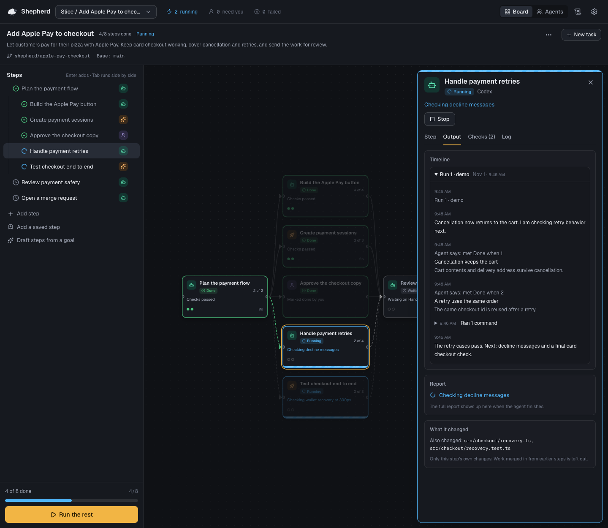

Local app · Free and open source
Long tasks.
Clear next steps.
Shepherd is a free, open-source app that runs on your machine to plan, run and check long coding-agent work with Codex and Claude Code.
npx shepherd-agents
macOS first · Node.js 22.12+ · Git
Codex or Claude Code installed and signed in.
Know where the work stands.
See what's done, what's running and what needs you. Open a step for its instructions, progress and checks.
Real app. Fictional Slice project. Run notes and results are sample data.

Eight steps. Four done, two running, review and a merge request still ahead.The plan stays visible, one step at a time.

A plan you can
follow through.
Keep projects organized into tasks, and tasks into steps. Give each step a clear request, someone to do it and a way to check the result.
- 01
Plan it.
Write steps in the outline, or let Codex draft them from your goal. Assign each step to Codex, Claude Code or yourself. Add Done when items so the request has a clear finish.
- 02
Run it.
The map shows which steps wait and which can run side by side. Each task has its own branch and folder. The timeline records progress notes, commands, checks and changed files so you can pick up where you left off.
- 03
Check it.
An agent saying “done” is a starting point. Add a command check, ask Codex to check the work against the step, or ask to review it yourself. Read the results before moving on.
- 04
Merge it.
Accepted steps collect in the task's branch. Add an “Open a merge request” step to prepare the handoff. Review the changes before bringing the task into its base branch.

Real app. Fictional Slice project. Run notes and results are sample data.
Give “done” a definition.
The command passed. Codex also reviewed the work against this step's four Done when items.

Checks are optional. “Check the work against this step” uses a separate Codex run, even when Claude Code wrote the code. Agent progress marks and check results are different things. A passing check is evidence to review, not a guarantee that the work is correct.
How checks workYour machine.
Your agents.
Your work.
Explore the source Shepherd runs the real Codex and Claude Code with your own logins, repositories, connectors and skills.
Nothing goes to a Shepherd server: there is no hosted Shepherd service. No Shepherd account, hosted database or telemetry. Your agents, connectors, commands and git remotes can still contact services using your own configuration.
Shepherd is free and open source under the MIT license. Agent usage follows your provider's plan.
Give your next big task
a clear path.
Start Shepherd, choose a project and write your first steps.
npx shepherd-agentsRequires Node.js 22.12+, Git, and Codex or Claude Code installed and signed in. Drafting steps and checking work against a step require Codex.
macOS first. Linux should work where no Mac-only feature is needed; those features are unavailable there. Windows is not supported yet.
Shepherd opens in your browser. Keep its terminal running while you work.
A little structure. A lot less herding.
A few practical questions.
Does it cost anything?
Shepherd is free and open source under the MIT license. There is no Shepherd subscription. Codex and Claude Code usage follows your provider's plan.
Which agents can I use?
Shepherd runs the real Codex and Claude Code installed on your machine. You can also assign a step to yourself. Drafting steps and checking work against a step require Codex.
Does my code leave my machine?
Shepherd has no hosted service, database or telemetry. Your agents, connectors, commands and git remotes can still send code or other data to services using your own configuration and logins.
What does it need?
Node.js 22.12+, Git, and Codex or Claude Code installed and signed in. macOS first. Linux should work where no Mac-only feature is needed; those features are unavailable there. Windows is not supported yet. Shepherd opens in your browser; keep its terminal running.
Read the setup docs